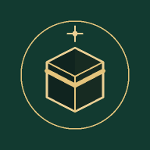

Koneksi terputus
Hubungkan kembali internet untuk membuka arena. Progress terakhir yang sudah tersimpan tidak dihapus.
Kembali ke lobbyLatihan 3D belum mendukung penggunaan sepenuhnya offline.

Hubungkan kembali internet untuk membuka arena. Progress terakhir yang sudah tersimpan tidak dihapus.
Kembali ke lobbyLatihan 3D belum mendukung penggunaan sepenuhnya offline.